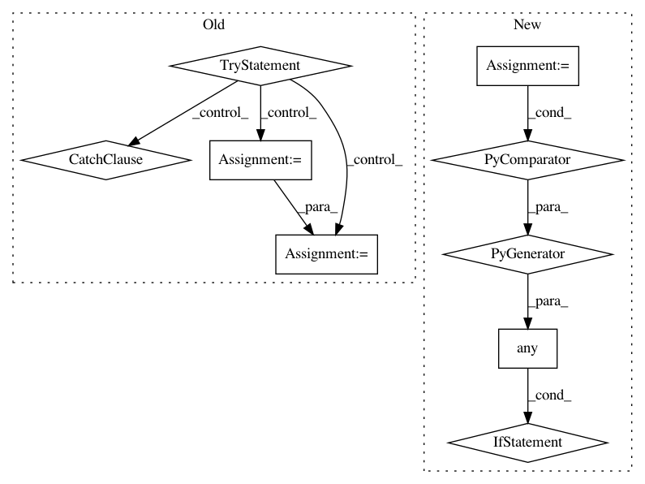

55a0700a659abde74acd0972922ef563c30e8e2c,pynets/plotting/plot_graphs.py,,plot_conn_mat,#Any#Any#Any#Any#Any#Any#,17
Before Change
conn_matrix_bin = thresholding.binarize(conn_matrix)
conn_matrix_plt = np.nan_to_num(np.multiply(conn_matrix, conn_matrix_bin))
try:
with open(
pkg_resources.resource_filename("pynets", "runconfig.yaml"), "r"
) as stream:
hardcoded_params = yaml.load(stream)
try:
labeling_atlas = \
hardcoded_params["plotting"]["labeling_atlas"][0]
except KeyError as e:
print(e,
"Plotting configuration not successfully extracted"
" from runconfig.yaml"
)
sys.exit(1)
stream.close()
labels = [i[0][labeling_atlas] for i in labels]
except BaseException:
pass
try:
plot_matrix(
conn_matrix_plt,
figure=(10, 10),
After Change
)
sys.exit(1)
if any(isinstance(sub, dict) for sub in labels):
labels = [i[0][labeling_atlas] for i in labels]
try:
plot_matrix(
conn_matrix_plt,
figure=(10, 10),
In pattern: SUPERPATTERN
Frequency: 3
Non-data size: 9
Instances
Project Name: dPys/PyNets
Commit Name: 55a0700a659abde74acd0972922ef563c30e8e2c
Time: 2020-10-26
Author: dpisner@utexas.edu
File Name: pynets/plotting/plot_graphs.py
Class Name:
Method Name: plot_conn_mat
Project Name: dPys/PyNets
Commit Name: 55a0700a659abde74acd0972922ef563c30e8e2c
Time: 2020-10-26
Author: dpisner@utexas.edu
File Name: pynets/plotting/plot_graphs.py
Class Name:
Method Name: plot_community_conn_mat
Project Name: quiltdata/quilt
Commit Name: 7d9a7fead18653a43645c3d673499cf639337406
Time: 2020-06-03
Author: akarve@users.noreply.github.com
File Name: lambdas/es/indexer/index.py
Class Name:
Method Name: handler